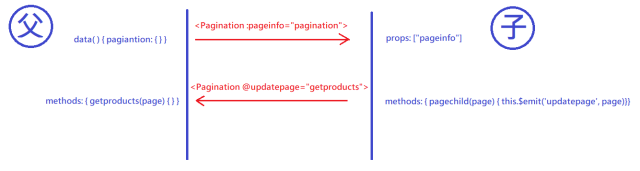

【Vue】父子元件通訊
父元件
1 | <Pagination :pageinfo="pagination" @updatepage="getproducts" /> |
子元件
1 | export default { |
點下連結，觸發 pagechild，傳到父元件的 updatepage = getproducts，傳入的參數會自動帶入 getproducts，父元件要先在 data 內定義 pagination，當 pagination 改變 時，會傳入冒號後定義的變數 pageinfo，子元件也要用 prop 定義 pageinfo 來接收這個值

- Post title：【Vue】父子元件通訊
- Post author：Neil Yang
- Create time：2019-06-17 00:00:00
- Post link：https://des86532.github.io/2019/06/17/Vue/vue-emit/
- Copyright Notice：All articles in this blog are licensed under BY-NC-SA unless stating additionally.